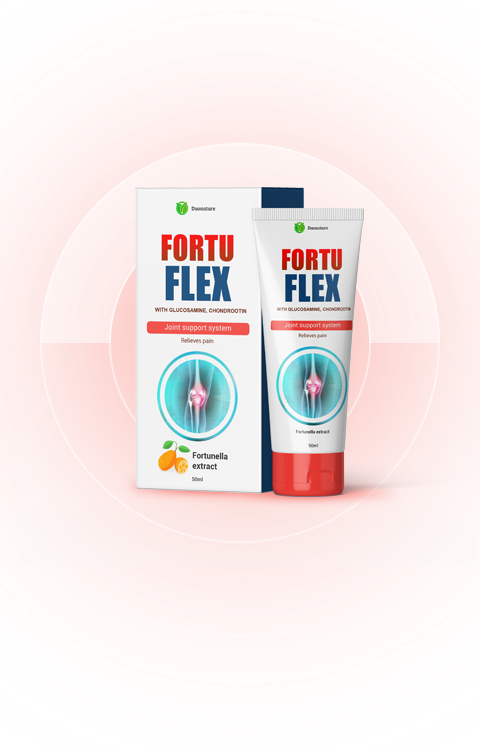

Causas de enfermedades
de articulaciones
Cambios relacionados con la edad, desgaste articular, agotamiento del tejido cartilaginoso, predisposición genética
Exceso de peso, cargas desiguales, lesiones, estrés.
Estilo de vida sedentario, mala alimentación, malos hábitos, falta de vitaminas.
Las principales ventajas de crema Fortuflex
Rapidamente alivia el dolor, la hinchazón y la inflamación.
Restaura las articulaciones
Mejora los procesos metabólicos en las articulaciónes
Inicia procesos de recuperación ósea y tejido cartilaginoso
Alivia calambres musculares
 ENCARGAR CON DESCUENTO
ENCARGAR CON DESCUENTO
Estudio independiente de la crema Fortuflex
Organización Mundial de la Salud, en 2019, realizó una serie de pruebas clínicas de la crema Fortuflex. En la prueba participaron 3500 personas con diferentes enfermedades de las articulaciones y diferentes grados de gravedad. De acuerdo con las condiciones, todos los participantes fueron tratados con crema Fortuflex.

Al final del estudio, se obtuvieron las siguientes estadísticas:
Se sintieron el resultado después de la primera aplicación
Notado el alivio instantáneo del dolor
Enfermedad vencida en un curso de tratamiento

Fortalecimento de estado general de las articulaciones.

Liberación de la artritis y la artrosis
¿Que es lo hace la crema Fortuflex
tan eficaz?

Gracias a su fórmula única con la presencia de ingredientes naturales altamente efectivos, la crema actúa sobre el foco de inflamación, eliminándolo. La condroitina y la glucosamina, incluidas en fortuflex, tienen máxima actividad y tienen un efecto inmediato sobre los tejidos internos de la articulación, previenen procesos dañinos en el cartílago y tejido óseo.

Condroitina
- Estimula la síntesis de ácido hialurónico, que fortalece no solo el cartílago, sino también los ligamentos y tendones;
- Estimula la formación de otras sustancias a partir de las cuales se construye el cartílago;
- Retiene agua en el cartílago, mejorando la amortiguación;
- Bloquea las enzimas que destruyen el tejido conectivo;
- Tiene efecto antiinflamatorio.

Glucosamina
- Estimula la formación de ácido hialurónico, que retiene agua en el tejido conectivo, aportando elasticidad;
- Estimula la síntesis de colágeno, un componente importante del cartílago, que asegura su fuerza;
- Regula la cantidad y composición del líquido intraarticular;
- Inhibe la inflamación en los tejidos de la articulación;
- Bloquea la formación de radicales libres, ralentizando el envejecimiento de la articulación.

Extracto de kumquat
- Estimula el sistema inmunológico;
- Repone la deficiencia de vitaminas y minerales;
- Elimina toxinas del cuerpo;
- Acelera la curación al estirar ligamentos, tendones y músculos;
- Aumenta la resistencia a virus e infecciones.
Opinión de especialista
Pablo Muñoz Traumatólogo, cirujano del Departamento de Cirugía y Artroscopia de Articulaciones
La inmensa mayoría de los medicamentos modernos para las articulaciones son simplemente anestésicos locales que en realidad no afectan la estructura del tejido del cartílago y, por lo tanto, no tratan la articulación. Es decir, enmascaran la enfermedad que continúa progresando, lo que conduce a problemas aún mayores.
La crema actúa localmente, penetra directamente en la cavidad de la cápsula articular y actúa directamente para eliminar la enfermedad. Fortuflex regenera el tejido cartilaginoso dañado, elimina el dolor y la inflamación de las articulaciones y restaura su funcionamiento normal. Ideal para el tratamiento de osteocondrosis, artritis, artrosis, trastornos del sistema musculoesquelético.
 ENCARGAR CON DESCUENTO
¿Cómo usar la crema Fortuflex?
Aplique la crema en las áreas problemáticas de las articulaciones.
Frotar masajeando la piel.

Reseñas de los clientes

Trabajé un día en el jardín y después comenzo un terrible dolor de espalda. Con gran esfuerzo al día siguiente llegué al médico, pero me intimidó con diagnósticos terribles, me recetó un montón de medicamentos y me dijo que me preparara para la operación. ¡Es un milagro que no ha logrado de convencerme! El mismo día, mi amiga trajo crema Fortuflex y comencé a aplicarla a mi espalda adolorida 2 veces al día. A la mañana siguiente, me desperté sin el dolor habitual, me levanté fácilmente de la cama y me ocupé de las tareas domésticas. Me dolía un poco la espalda, pero todos los días el dolor desaparecía. Como resultado, dos semanas después fui a ver al médico nuevamente y se sorprendió al decir que estaba completamente sana, ¡mi espalda estaba en perfecto estado! Ahora siempre tengo esta crema en mi botiquín.

Soy un atleta profesional, he estado boxeando durante 14 años, luego comenzaron problemas graves en las articulaciones y tuve que dejar el cuadrilátero. Las viejas lesiones se hicieron sentir y, a los 31 años, me convertí en una persona prácticamente discapacitada que no puede levantarse de la cama por las mañanas sin ejercicios especiales. Dolía absolutamente todo: ¡rodillas, manos, espalda, hombros! Sufrí durante mucho tiempo hasta que me enteré de Fortuflex. Durante aproximadamente un mes, aplicaba regularmente esta crema en las partes doloridas; el dolor pasaba muy rápido, ahora me siento como una persona absolutamente sana.

He trabajado toda mi vida como niñera, ayudando a los demás y cuando aparecieron mis nietos, me convertí en una abuela inútil que apenas se mueve de la habitación a la cocina. Durante varios años sufrí tanto hasta que mi hijo ordenó Fortuflex y me trajo el remedio. Ahora he recuperado completamente mi salud, salgo de casa sola, voy con mis nietos al parque, salgo de compras. Estoy muy feliz. ¡que a mis 68 años puedo cuidarme sola, e incluso ayudar a mis nietos!

¿Cómo hacer un pedido?
Paso 01 Deje una solicitud en este sitio.
Paso 02 Nuestro consultor se pondrá en contacto con usted para confirmar el pedido.

Paso 03 Entregaremos el pedido en 1-3 días.
Paso 04 Pague al recibir.